Item 8: Avoid finalizers and cleaners
什麼是 Finalizers
finalizer 是 Java 提供的一種 resource 回收機制，作用於 GC (Garbage Collection) 在回收物件前，會呼叫物件的 finalize 方法來釋放 resource。

若物件有 resource 需要釋放，就將釋放的程式碼寫在 protected void finalize()。
public class ClassWithFinalizer {
@Override
protected void finalize() {
// release resource
}
}
Finalizer 有 Security, Reliability, Performance 風險，不建議使用，並被棄用。在 Java 9 被標記為 deprecated 且為 removal。
Finalizer 的替代方案
不使用 finalizer 可以使用 try-finally 替代。
1 2 3 4 5 6 7 8 9 10 11 12 13 14 15 16 17 18 19 20 21 22 23 24 | |
程式碼中，在 try 區塊中建立 resource，並在 finally 區塊中釋放 resource。因為 try 區塊中不止一個 resource，所以在 finally 區塊中要分別釋放。為了避免釋放 resource 時發生例外影響其他 resource 的釋放，所以在釋放 resource 時要用 try-catch 包住，忽略例外。
這樣的寫法真的是又臭又長。
try-with-resources
Java 7 新增的 try-with-resources 可以用來釋放 resource，改進上面所提到的 try-finally 的寫法。等價寫法如下:
try (FileInputStream input = new FileInputStream(file1);
FileOutputStream output = new FileOutputStream(file2)) {
// ... copy bytes from input to output ...
}
Cleaners
try-with-resource 不適用在生命週期長的 resource，Java 9 新增了 Cleaner 用來釋放長生命週期的 resource。
Cleaner 允許註冊 release action 的動作，當物件 unreachable 時，Cleaner 會執行 release action。
1 2 3 4 5 6 7 8 9 10 11 12 13 14 15 16 17 18 19 20 21 22 23 24 25 26 | |
State稱作 clean action，實作Runnable介面，負責執行釋放 resource 的動作。CleaningExample實作AutoCloseable介面，負責註冊 clean action。當物件變得 unreachable 時，clean action 會被執行。- 注意，clean action 不要回去參考
AutoCloseable物件，否則會讓 unreachable 狀態永遠無法達到。
- 注意，clean action 不要回去參考
- 向 cleaner 註冊 clean action 後回傳
Cleanable物件，用來執行 clean action。- 最有效率的做法是在 resource 不需要時，呼叫
clean()來執行 clean action。(第 23-25 行)
- 最有效率的做法是在 resource 不需要時，呼叫
- clean action 在 cleaner 的 thread 中執行，所有 clean action 拋出的例外都會被忽略。所以 clean action 的例外不會影響其他的 clean action。
AutoClosable註冊的所有 clean action 都執行完畢，GC 才會回收物件。- Clean action 可以用 lambda 來實作，但會很容易不小心參考到
AutoCloseable物件。所以按範例實作成 nested static class 可以避免這種錯誤。
如果依賴 cleaner 自動執行 clean action，要注意的是，不能保證在 System.exit (包含程式正常結束) 是否會被執行。因此，有可能程式結束了，但是 clean action 並沒有執行。
另外，cleaner 受 GC 排程，也會有 Reliability 與 Performance 的問題。
簡單來說，應避免使用 finalizer 與 cleaner。